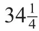

英文
英文欧文·威兰斯·里查孙
编者按
在经典物理学中不存在“磁荷”这个概念——没有相反磁极的孤立磁极是不存在的。但保罗·狄拉克提出量子理论也许能允许这样的“磁单极”存在。在本文中，英国著名物理学家欧文·威兰斯·里查孙认为对于物理学来说磁单极的存在也许是必然的。既然科学主要研究由带电的粒子组成的原子，就应该有相应的带磁性的一类原子存在。里查孙指出它们的性质很不一般；尤其是它们的谱线频率是“普通”物质的1010倍。狄拉克推测磁单极之间的强大作用力使它们在通常环境下无法分离，但里查孙认为在高能宇宙射线中这种现象就有可能会发生。 英文
在最近一期的《皇家学会会刊》中，狄拉克已得出结论，量子理论要求存在强度相当于137÷2倍的电子电荷的单个磁极。假如这样的物质是普遍存在的，那么我们可以预期现实的宇宙与目前实验者们眼中的宇宙会有很大的不同。 英文
似乎没有理由不能把建立在电子和原子核之上的一整套原子理论——除细节外基本属于静电问题——应用到以相反磁荷相互吸引为基础的相应的静磁问题上。按照这种方式，我们首先可以预期得到一组与带电原子类似的“磁”的原子，通常我们认为物质是由带电原子构成的。磁的原子与我们原有概念中所熟知的原子有很大的差别。差别的大小在某种程度上取决于磁极的质量。量子理论并未说明相应的具体数值，但我认为如果这个值存在，用经典方法论证则应该约为相应带电物的500倍。按照这个思路推算，这些磁的原子的尺度达到10–14 cm至10–15 cm，而元素周期表中的原子尺度为10–7 cm至10–8 cm。由这些磁性结构原子发射的“谱”线频率约为带电原子谱线相应频率的1010倍；例如，假如以上磁性结构的原子是存在的，赖曼线系中的第一条线的频率将从v = 2.5×1015 s–1增加至v = 3.1×1025 s–1。即使对数值不确定的磁极质量作很大的调整，所得的结果仍与带电原子的情况相差很大。 英文
狄拉克指出，这些磁极尚未被观测到的原因可能是因为它们之间的力远大于电子和质子之间的力，从而使它们不能分离。我们有理由相信它们不可能接近到上述数字表示的程度。这些磁单元形成的角量子数为1的原子种类数远小于1。这是根据与氢光谱项有关的狄拉克公式或者根据最小时间原理得出的。这也许是在迫使磁的原子过于符合我们所熟悉的模式。在任何情况下，磁的原子都不能构成角量子数小于

的原子。否则，波函数中的时间因子会含有实指数，并随时间的消逝而趋于无限大。然而，尽管有如此高的量子数，与相应的电子结构相比，磁单元之间的作用力仍然很大，频率也仍然很高。 英文
这些量子理论的成果可能会在“超穿透”辐射领域中得到应用。我对孤立磁极的形成过程没有直接的了解，但我推测，产生这种具有磁极内能的物质是相当困难的。因此，地球上磁原子的数量似乎应该远小于电子和质子的数量，但在宇宙中磁原子的数量也许已经足以用来解释超穿透辐射这种不能用其他方法解释的现象。如果这类与电子和质子的性质差异很大的孤立磁极是存在的，那么将会使许多宇宙问题的研究思路发生明显的变化。 英文
（沈乃澂 翻译；赵见高 审稿）